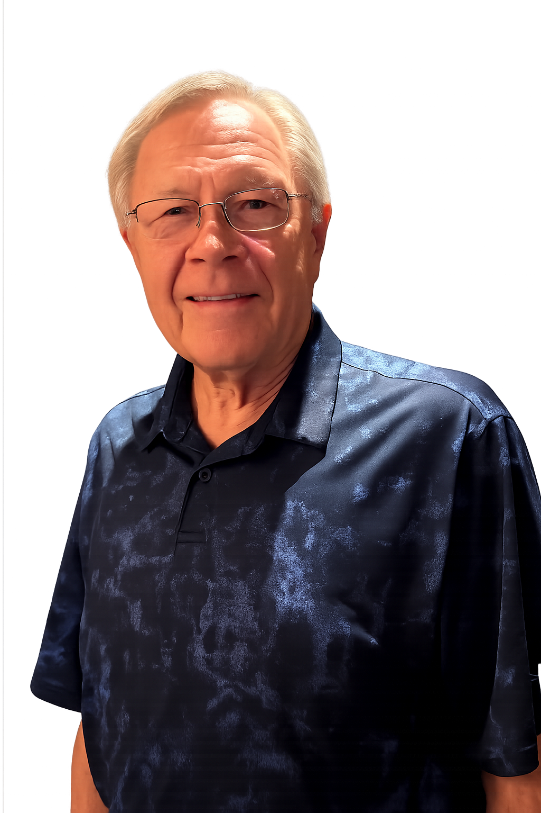

Chanhassen's Future
The next City Council will make decisions that shape Chanhassen for decades to come. I want to help ensure those decisions strengthen our community for future generations.
Vote for
Chanhassen City Council
Experienced leadership. Thoughtful decision-making. A commitment to serving the people of Chanhassen.

Why seek a seat on the Chanhassen City Council?
The next City Council will make decisions that shape Chanhassen for decades to come. I want to help ensure those decisions strengthen our community for future generations.
My years as Mayor and City Council member taught me the value of listening carefully, working respectfully, and making thoughtful decisions.
The City Council works best when every member brings respect, collaboration, and a commitment to serving the people of Chanhassen.
Thank you for visiting and supporting our community!
Every contribution helps me connect with more residents throughout Chanhassen. Thank you for your support.
Donate TodayCOMMUNITY SUPPORT
I'm grateful for the encouragement and support I've received from residents, community leaders, and friends throughout Chanhassen.
COMMUNITY ENDORSEMENT
We have had the privilege of knowing Denny both professionally and personally for over 15 years. HIS decision to step forward and serve Chanhassen once again reflects who he is at his core—someone dedicated to "purposeful living" and meaningful connection with others.
Denny and his wife, Ruth, genuinely care about the Chanhassen. When you combine that spirit with Denny's experience, kindness, and deep love for Chanhassen, you have a most valuable City Council member.
Al and Sue Bill
Victoria, MN